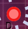
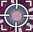

from kancolle_utils import * def hinamatsuri_2020_e1_p4(): popup("WARNING: CHECK AKASHI EQUPMENT BEFORE SORTIE") click_random() click_offset(,10,10) click_offset(,10,10) click_random() click_offset(,10,10) click_offset(,10,10) click_random() compass() compass() formation_combined_asw() accept_battle_results(True) next_node() compass() formation_combined_surface() accept_battle_results(True) next_node() compass() #skip repair formation_combined_aa() accept_battle_results(True) next_node() formation_combined_surface() accept_battle_results(True) next_node() compass() exit() def hinamatsuri_2020_e1_p2(): compass() formation_guard() accept_battle_results() next_node() compass() formation_line_abreast() accept_battle_results() next_node() compass() formation_diamond() accept_battle_results() next_node() formation_line_ahead() boss_preview() def main(): try: disable_auto_rethreat() hinamatsuri_2020_e1_p4() except Exception, e: print e finally: beep() main() # disable_auto_rethreat() # compass() # formation_combined_surface() # formation_combined_aa() # formation_combined_asw() # formation_diamond() # formation_guard() # formation_line_ahead() # formation_line_abreast(): # asw # wait_for_select_node_dialog() # accept_battle_results(True) # True if combined # next_node() # boss_preview()